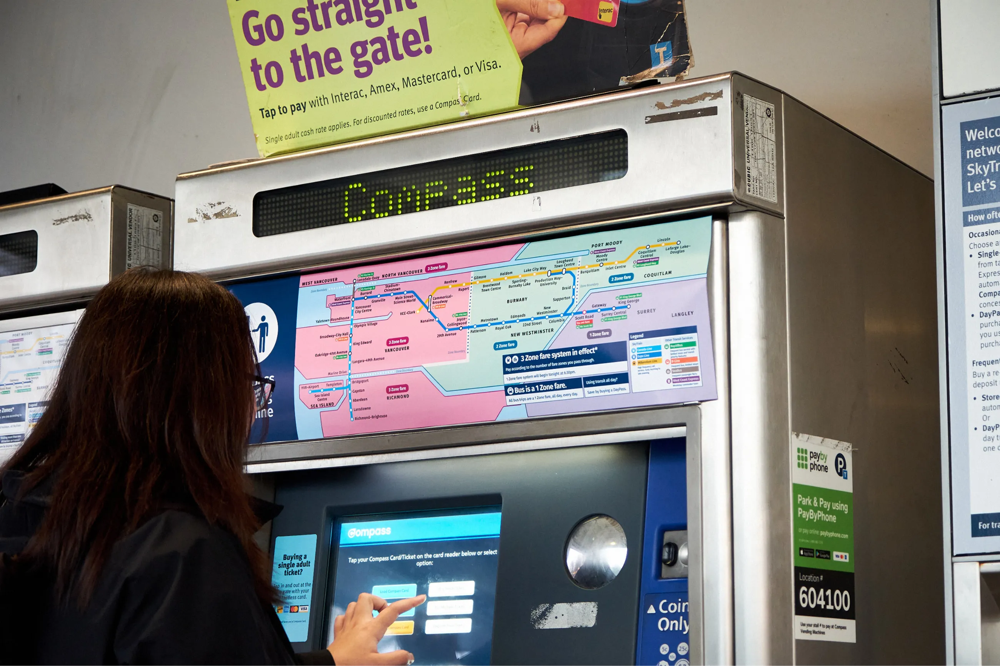
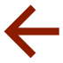
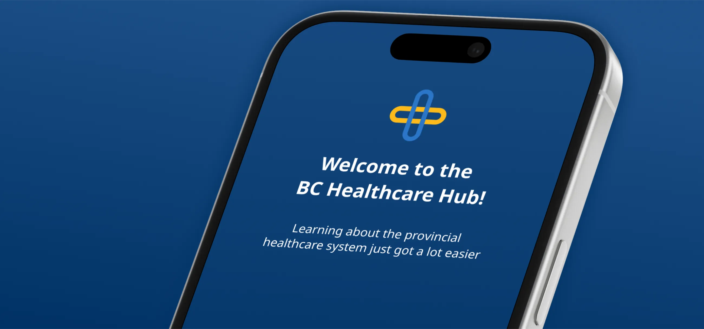

Making it easier for low-frequency transit riders to purchase tickets; in collaboration with TransLink.
Explore project

A shared listening experience for large student design spaces of the near future.
Explore project

An interactive system to help international students apply for provincial health insurance.
Explore project
As a user experience (UX) designer, I enjoy designing physical interactive products which work in tandem with digital systems and experiences. In contemporary UX design, I believe great experiences emerge when tangible interaction seamlessly merges with digital complexity.
Iterative processes and user-centered design methods have driven my ideas and decisions while studying at Simon Fraser University’s SIAT program. In 2024, attending TU/e’s Industrial Design exchange program in The Netherlands introduced me to a unique learning and working environment. Their emphasis on active reflection and personal development helps me bring fresh perspectives to projects today and refinements to my design process tomorrow.
5 month international exchange